This page shows the project's results. The methodology, the design decisions and the limitations are documented in the repository's README.
7.1 Kalman Filter — hardness sensor fusion
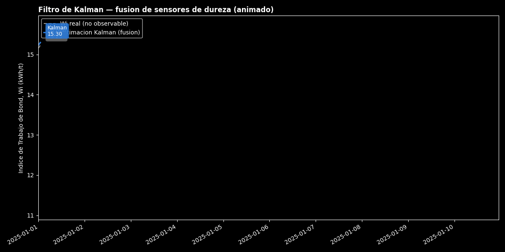
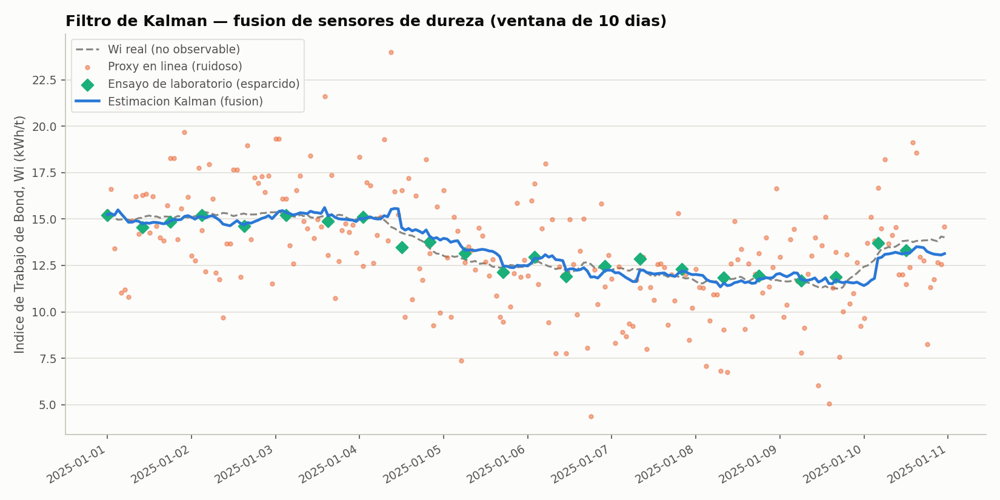
7.2 Exploratory analysis — correlations
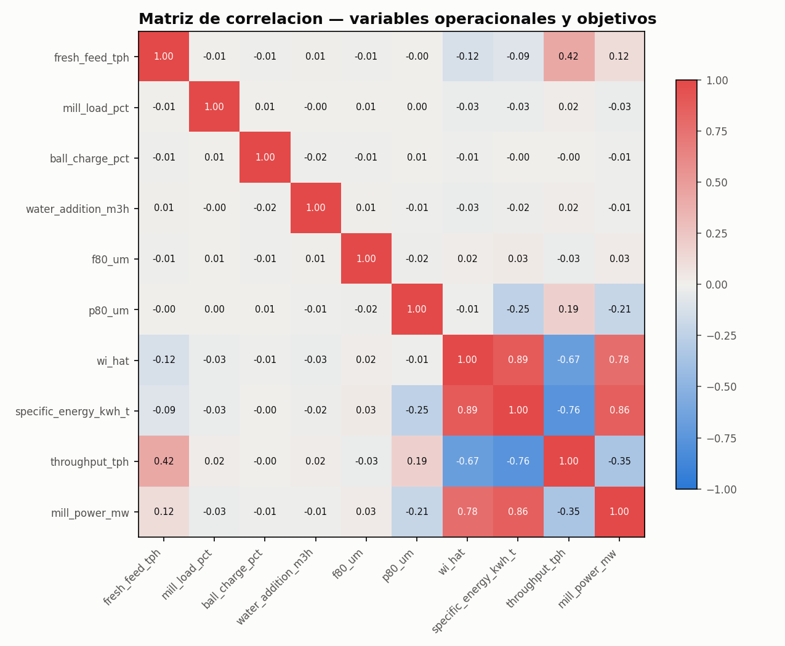
The Kalman estimate (wi_hat) correlates 0.89 with true specific energy
7.3 Multi-output model — model comparison
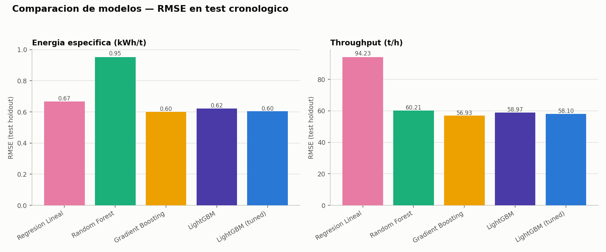
7.4 Feature importance (best model)
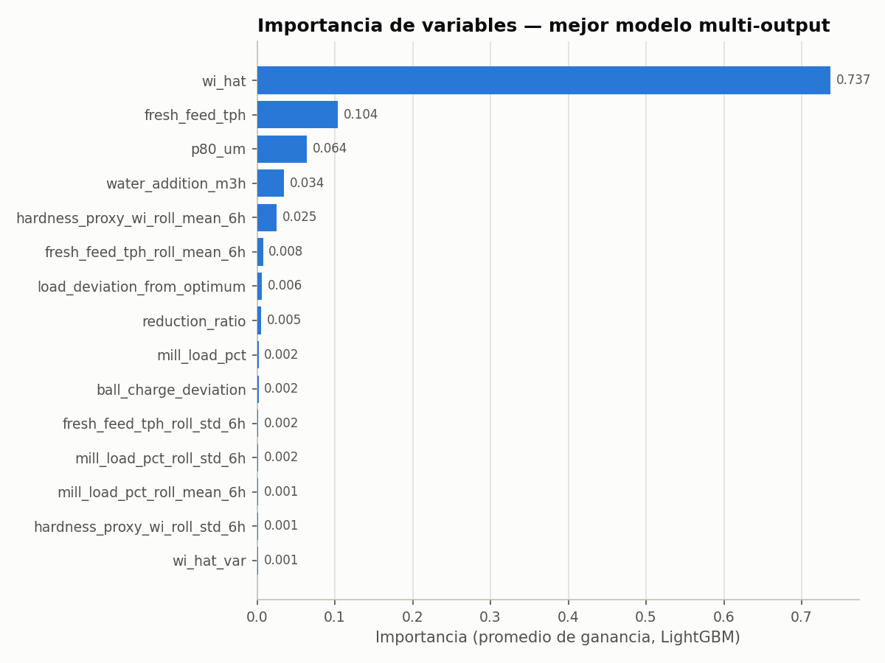
The single most important feature in the predictive model **is exactly
7.5 Learning curve and residuals
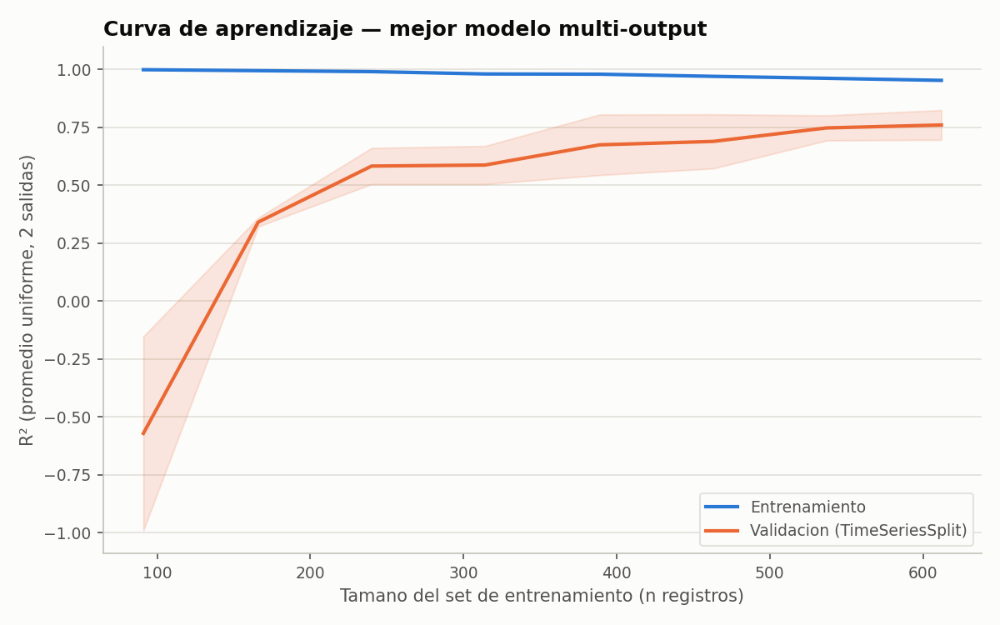
The validation curve stabilizes around R² ≈ 0.78-0.79 from ~500 training
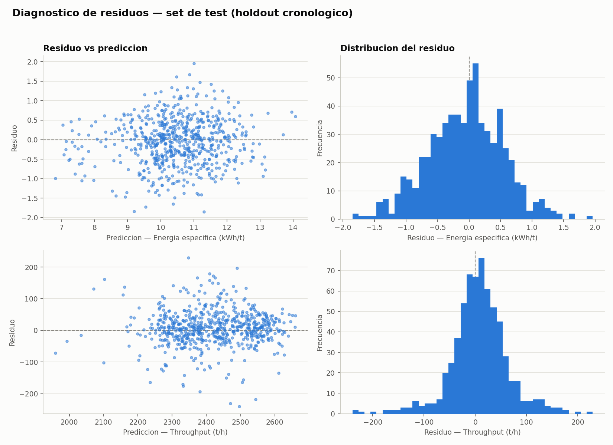
Residuals for both outputs are symmetrically distributed around zero with
7.6 Energy demand forecasting (24h ahead)
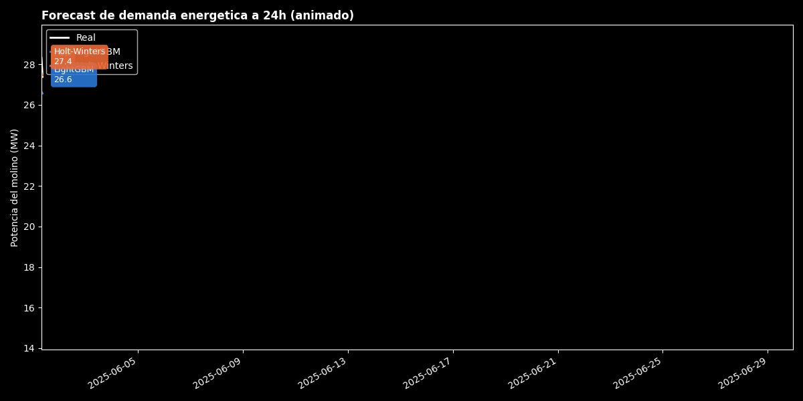
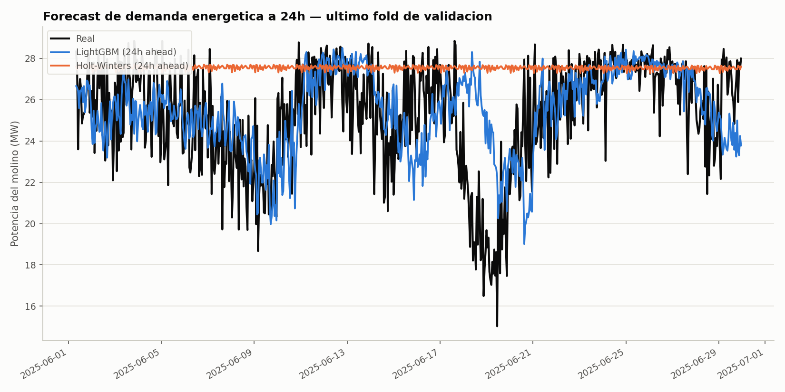
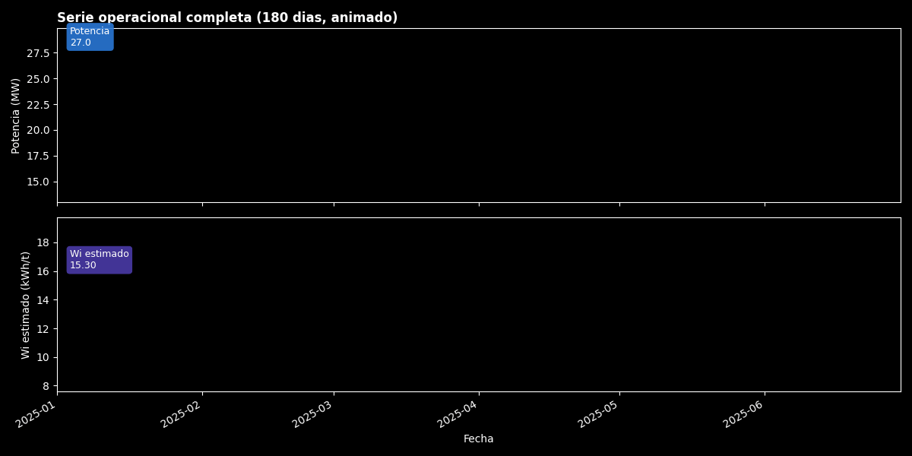
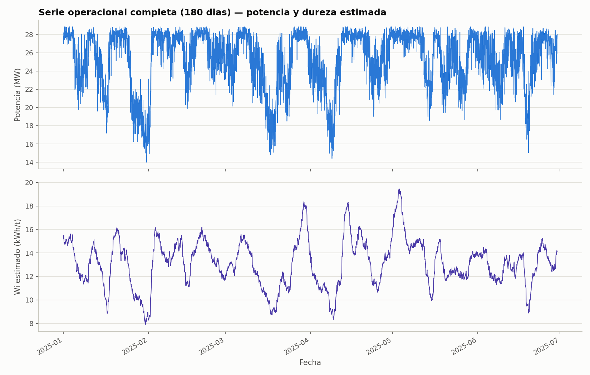
7.9 PyTorch MLP surrogate — activation comparison and benchmark vs. tree ensemble
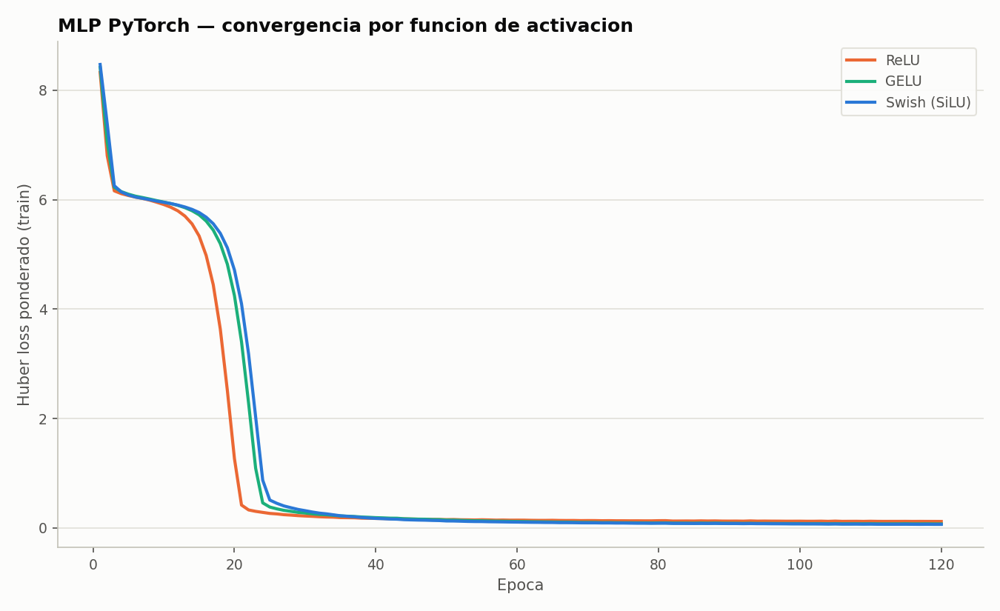
Swish generalizes best of the three, narrowly ahead of GELU and clearly
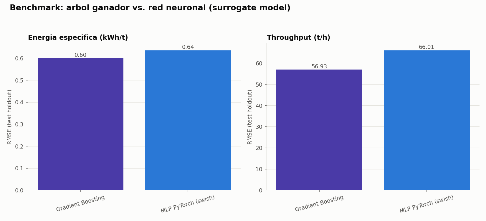
The tree ensemble stays the production model — it beats the MLP on both